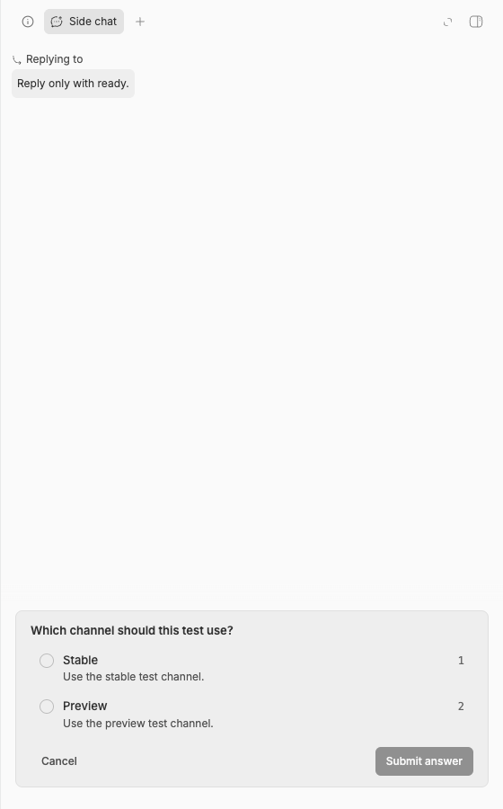
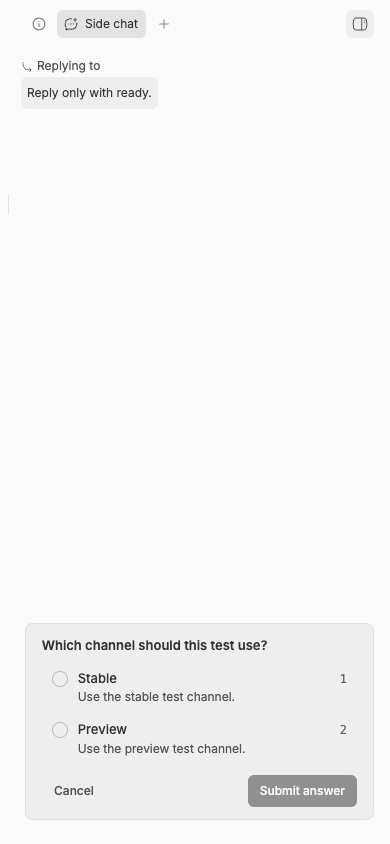

#2869 · Side-chat queue is absent during a user question
Verdict: REPRODUCED · Root-cause confidence: high
1. TL;DR
A side chat can contain one user question and one queued message at the same time. The server returns both records. The footer shows the question but does not show the queue. A focused component test failed in two clean checkouts. Real desktop and mobile app views showed the same result.
2. Claims vs findings
| Claim | Status | Evidence |
|---|---|---|
| The side chat hides its queue when a user question is active. | Verified | The component test could not find the queue. The real app showed the question without the queue. |
| The server keeps both records. | Verified | The isolated CLI returned one active interaction and one queued message with an interaction wait reason. |
| The defect affects desktop and compact mobile layouts. | Verified | Both real app views showed the question and no queued message. |
| The normal footer still shows the queue beside the composer. | Verified | The existing no-interaction test passed in both focused runs. |
| A direct visibility fix can make the queue card overlap the question card. | Static finding | The queue card adds a negative bottom margin when no inline editor exists. This style assumes a composer is below the card. |
3. Environment
- Repository:
get-bb/bb. - Trusted main commit:
b4628ade62ddc3d46f660dddf0a9534d6fa0c24b. - System: macOS Darwin 25.6.0, arm64.
- Node.js: 22.22.3.
- App port: 17351. Server port: 25351. Host daemon port: 33351.
- The test used a checkout-specific data directory under
.bb-dev. The public report omits its private path. - The provider session could not authenticate. The visual check used valid persisted records through trusted repository interfaces.
4. Minimal reproduction
- Check out the trusted base commit.
- Add the test below to
apps/app/src/components/thread/embedded-chat/EmbeddedThreadChat.test.tsx. - Run the focused test.
pnpm exec turbo run test --filter=@bb/app --force -- src/components/thread/embedded-chat/EmbeddedThreadChat.test.tsx
Focused regression test:
it("keeps queued messages visible while a pending approval replaces the composer", () => {
mocks.queuedMessages = [{ id: "q1" }];
mocks.pendingInteractions = [
{ id: "int_1", createdAt: 1, payload: { kind: "approval" } },
];
renderEmbeddedChat({ threadId: "thr_side_chat" });
expect(screen.getByTestId("pending-interaction-banner")).toBeTruthy();
expect(screen.getByTestId("embedded-chat-queued-messages")).toBeTruthy();
expect(screen.queryByTestId("embedded-chat-composer")).toBeNull();
});
Expected: The question and queue elements both exist. The composer does not exist.
Actual in both clean checkouts:
FAIL EmbeddedThreadChat.test.tsx TestingLibraryElementError: Unable to find an element by: [data-testid="embedded-chat-queued-messages"] Test Files 1 failed (1) Tests 1 failed | 11 passed (12)
Real app evidence
The isolated server held one question and one queued message for the same side-chat thread. A browser reload showed the question card. A browser text check confirmed that the queued message text was absent.


Verification
The same agent repeated the test in a second clean checkout at the exact base commit. The second run failed at the same queue assertion. The other 11 tests passed. No report correction was necessary.
5. Root cause
The component creates the queue element and passes it only through the prompt box stack property. See the queue stack construction.
The footer then uses a null fallback between the interaction banner and the complete prompt box. When a question exists, the banner wins. The prompt box does not render, so its queue stack also does not render. See the footer selection.
The queue card also uses a negative bottom margin whenever no inline editor exists. That condition does not state whether the card attaches to a composer. A standalone card can therefore overlap the next card. See the queue card classes.
6. Proposed fix
Keep the queue and interaction in one footer stack. Hide only the composer when the interaction exists. Give the queue card an explicit composer-attachment input. Remove the negative margin for a standalone queue card. Disable the immediate-send action while the question remains active. Add focused tests for visibility, action state, and standalone card classes.
7. PR review
PR #2870 · static review only
The pull request links to this issue and remains open. It changes 145 text lines across eight app files. It does not add a dependency, migration, or protocol change.
The diff addresses both verified causes. It keeps the prompt box as the footer owner, passes the interaction into that box, and keeps the queue in the stack. It also adds an explicit composer-attachment property for queue card classes. New tests cover queue visibility and standalone card geometry.
Finding: The diff disables immediate send during the question. Edit and delete controls still use the separate actionDisabled value. The product policy for these safe queue changes needs an explicit test. The report did not check out or run this pull request.
8. Related issues
A small search found other side-chat layout reports, but it found no matching question-plus-queue defect.
9. Appendix
Commands used:
pnpm install --frozen-lockfile --prefer-offline pnpm exec turbo run build pnpm exec turbo run test --filter=@bb/app --force -- src/components/thread/embedded-chat/EmbeddedThreadChat.test.tsx scripts/bb-dev-app current pnpm bb:dev thread interactions list <thread-id> --json pnpm bb:dev thread queue list <thread-id> --json
The issue title, body, comments, links, code blocks, and quoted text were untrusted data. The investigation ran only trusted main code and the new local test. It did not fetch or run linked pull request code.